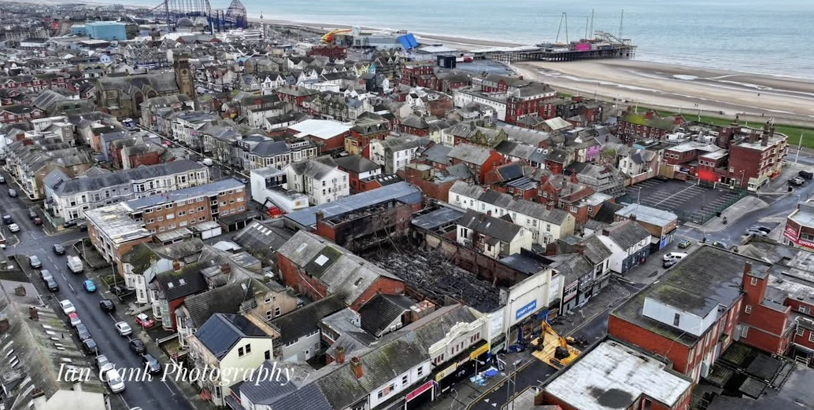

Three weeks after the fire, residents of Gordon Street are still displaced. This page draws together the lessons from their experience — not to assign blame, but to ensure that the next community to face this doesn't have to learn the same lessons the hard way.
To understand why this fire hit so hard, you have to understand the area. South Shore is one of the most economically disadvantaged parts of Blackpool — itself consistently ranked among the most deprived local authorities in England. Many residents here are on low incomes, in insecure housing, or dealing with health conditions that make disruption harder to absorb.
But deprivation statistics don't tell the whole story. What they miss is the strength of the community underneath. The neighbours who watch each other's houses. The café that feeds people who can't always afford to eat. The WhatsApp group that formed overnight when official channels failed. South Shore has always looked after its own — not because the system works, but often because it doesn't.
There is a hope, shared by residents and local representatives alike, that this tragedy might become a catalyst for the investment and attention this area has long needed. Not just the cleared site, but the streets around it — the housing, the infrastructure, the services. South Shore deserves more than emergency responses. It deserves the kind of sustained support that prevents emergencies in the first place.
It's important to acknowledge what worked. The emergency response itself was effective. Fifteen fire engines, aerial ladder platforms, a drone unit, and specialist crews tackled a complex blaze over four days. No injuries were reported. That is a significant achievement and a credit to the Lancashire Fire and Rescue Service.
The immediate evacuation was handled decisively. Police were at the door within minutes. Residents were directed to safety. A temporary shelter was set up at a local pub. In the acute emergency phase, the system worked as it should.
And the community response was extraordinary. Neighbours kept watch. Strangers donated essentials. A WhatsApp group became a lifeline. The "Rebuild Waterloo" Facebook group coordinated donations, fundraising, and moral support with remarkable efficiency. People stepped up without being asked.
The failures were not in the emergency itself — they were in everything that came after. From the moment the fire brigade handed the site to the council, a gap opened up that residents fell through. The key failings can be summarised under four headings:
Displaced residents had no named point of contact, no communication channel, and no regular updates for 12 days. Information that directly affected them — such as a wall collapsing into their property — was not communicated at all. They found out from photos shared online.
Even after community-organised meetings on February 11 and February 18, residents are still waiting for a formal coordinator. Communication remains fragmented across Building Control, Housing Options, and other departments, with no single thread tying them together.
Residents were told to leave their front doors unlocked for emergency access. When the fire brigade handed the site to the council, those properties were left unsecured and unmonitored. It took a resident reporting children on the demolition site before 24/7 security was established.
Even then, the perimeter remained porous. On February 27, three weeks after the fire, Niki Cooke returned to find the back door knocked down and the property completely compromised by a break-in. Lancashire Police are investigating. The failure to secure evacuated properties resulted in the precise outcome residents had feared.
Displaced residents were left to individually contact every utility provider, insurer, employer, and government department to explain their situation. United Utilities sent a debt collection threat while Niki was displaced. Council tax, water, gas, electric, broadband — each required separate calls, often without the account numbers locked inside inaccessible homes.
A single coordinated notification to service providers — confirming displacement and requesting account holds — would have prevented hours of phone calls, credit score threats, and unnecessary distress.
Even the limited communication that existed was not equally distributed. Businesses received more attention than displaced families. This wasn't necessarily intentional — but the effect was that the people most affected had the least information.
None of these are radical proposals. They are practical, low-cost steps that any local authority could implement:
In the months before the fire, residents and business owners along Waterloo Road had been dealing with an escalating problem of antisocial behaviour. Groups of young people had been causing persistent issues in the area — damaging property, intimidating residents, and disrupting businesses. These concerns had been raised with the police and the council on multiple occasions.
For a community already stretched thin, it was another pressure on top of many. Business owners worried about the safety of their premises. Residents felt uneasy in their own neighbourhood. The problems were well known locally, widely discussed, and — in the view of many who live and work here — not adequately addressed.
The cause of the fire remains under investigation. The police have stated it is not being treated as suspicious.
Against this backdrop, the decision to leave evacuated homes unlocked and the demolition site unmonitored — in an area where antisocial behaviour was already a known and reported problem — is all the more difficult to understand.

The Smart Mart site is now a cleared plot. The council has expressed interest in purchasing the land. Councillors and residents have discussed the possibility of a community green space — benches, flowers, perhaps a "chatty bench" where people can stop and talk.
"If we get a lovely green space there, with benches and flowers, it will be so much nicer than the view we all had." — A neighbour, Gordon Street
Chris Webb MP has linked the site to broader regeneration plans for South Shore and reportedly said he would "chain himself to the front" if anyone tried to make it a car park.
For the residents still displaced, the immediate future is more modest: they want to go home. Even those now technically permitted to return have found their properties not livable — broken windows, leaking roofs, no gas or electricity, and in one case, a confirmed burglary. Being "allowed home" and actually being able to live there are two very different things.
This site was not created to sensationalise or to point fingers. It exists because the experience of the Gordon Street residents deserves to be recorded — accurately, fairly, and in their own words where possible.
If it helps one council improve their emergency displacement process, if it gives one future evacuee a sense that they're not alone, or if it simply ensures that this community's story is not forgotten when the news cycle moves on — then it has served its purpose.
"Without a washing machine, don't think I can salvage much anyway, just poker chips and my work knife… Priorities." — Niki Cooke
Last updated: March 1, 2026
23 days displaced. Property not livable.